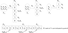

The Real Hash Was the Friends We Made along the Way
When I lived in Singapore, I attended a fascinating talk at FOSSASIA 2018 about Indeed’s fast and compact immutable key-value stores that went almost completely over my head. In fact, if you listen carefully during the Q&A session at the end, you can hear me ask some not-very-good questions in an ill-advised and ultimately futile attempt to relate to the speaker.
This was my first encounter with the concept of minimal perfect hashing. Unfortunately for me, I found most of the existing literature so impenetrable that I gave up on learning more. Hash, displace, and compress? Hypergraph peeling? RecSplit? Eventually I found a suitable entry point: Fast and scalable minimal perfect hashing for massive key sets.
Minimal perfect hashing
Let’s start with what minimal perfect hashing is:
Hashing
One definition of hashing is a process that converts some key to a value of some fixed size (e.g. an integer). We can think of this in terms of a hash function that takes some input and produces an integer as output.
Perfect
In practice, sometimes these hash functions produce the same output for different inputs, known as a hash collision. This is pretty annoying and causes lots of problems, and it would be nice if we could guarantee that distinct inputs always hash to different values, i.e. that the function is injective. Hash functions with this useful property are known as perfect hash functions. This requires all possible inputs to be known in advance.

Minimal perfect hashing
Bringing it all together, a minimal perfect hash function is one that has no gaps in its outputs, i.e. it bijectively maps \(n\) different inputs to \(n\) consecutive integers, e.g. \([0..n)\) or \([1..n]\). It’s important to note that minimal does not imply anything about the space or time complexity of these functions, e.g. it would be totally valid to have an internal hashtable that maps each input to a distinct integer without gaps and then use that to implement our hash function. In practice, however, we want these functions to be as efficient as possible to construct, store, and use, and this is an active area of research.

You’d probably want to use a minimal perfect hash when
- all possible keys are known in advance
- the set of keys doesn’t change
- space is at a premium
One attractive property of a minimal perfect hash function is that you can use it to create a minimal perfect hash table by associating it with an array where each value’s index is the hash of the corresponding key.
How it works
The approach used in the paper is based on cascading collisionless bitarrays, as illustrated below. I have a more detailed example later so if you aren’t able to follow this one that’s totally okay! It exists to give you a quick taste of the algorithm.

In the example, keys \(k_1\) to \(k_6\) are hashed and positions where there are no collisions are recorded. The keys that collide at each level are removed and retried at the next level until all the keys are used. For the first bitarray \(A_0\), \(k_3\) and \(k_6\) do not collide when using the hash function \(h_0\). For the next bitarray \(A_1\), \(k_1\) and \(k_5\) do not collide when using \(h_1\). Finally for \(A_2\), \(k_2\) and \(k_4\) do not collide using \(h_2\) and we have no more keys left. To compute the hash for a key, in this example \(k_2\), we find the position where \(A_n[h_n(k_2)] \equiv 1\) and count the number of 1s at or preceding this position, also known as the rank, which will always give us a number \([1..n]\). For \(k2\), the hash is \(5\).
Prerequisites
To implement this, we’ll need
- a family of hash functions
- bitvectors supporting \(rank\) (and \(select\)) operations
For the hash functions, I used hashWithSalt from the hashable package, and for the bitvectors I used the bv-little package because past Vaibhav asked for rank and select support.
Construction
At a high level, this is what the construction algorithm looks like:
- Repeat the following steps until the maximum level is reached or we have no more keys:
- Hash each key to a number \(i \in [0..n)\)
- If \(bitvector[i]\) has not been set this iteration, set it to \(1\), otherwise unset it
- Remove all keys that have been set successfully
- If there are any leftover keys, store them separately
Hashing
As I mentioned previously, I used hashWithSalt:
value = hashWithSalt currentLevel key `mod` (gamma * currentLength)The role of gamma is to control the amount of “slack” in the bitvector, since sometimes making it larger than strictly necessary can reduce the probability of collisions. More on this later.
Populating the bitvector
The approach described in the paper involves using an auxiliary bitvector \(C\) to keep track of collisions:
- Initialise two bitvectors \(B\) and \(C\) with \(0\)s
- When setting an index \(i\):
- If \(B[i] \equiv 0\) and \(C[i] \equiv 0\) then set \(B[i] = 1\)
- If \(B[i] \equiv 1\) then set \(B[i] = 0\) and \(C[i] = 1\)
- If \(B[i] \equiv 0\) and \(C[i] \equiv 1\) then do nothing
Lookup
To actually use our hash function, we can do the following:
- For each level:
- Hash the key and check if the corresponding index is set
- If so, find the rank
- If not, increment the level count and repeat
- Otherwise check the leftovers
Example
Let’s look at a small example. The Bondi to Coogee walk here in Sydney passes through the following beaches:
- Bondi
- Tamarama
- Bronte
- Clovelly
- Gordons Bay
- Coogee
and we can use these as keys for a minimal perfect hash function.
Construction
The results of the first iteration are
Level 0
┌─┐
│0│ <- ["Clovelly","Bronte"]
├─┤
│1│ <- ["Gordons Bay"]
├─┤
│0│
├─┤
│0│
├─┤
│0│ <- ["Coogee","Tamarama"]
├─┤
│1│ <- ["Bondi"]
└─┘So far, so good.
Level 1
┌─┐
│0│
├─┤
│0│
├─┤
│0│
├─┤
│0│ <- ["Coogee","Clovelly","Bronte","Tamarama"]
└─┘Hmm, that’s a little concerning.
Level 2
┌─┐
│0│ <- ["Coogee","Clovelly","Bronte","Tamarama"]
├─┤
│0│
├─┤
│0│
├─┤
│0│
└─┘This is not going well.
Level 3
┌─┐
│0│
├─┤
│0│ <- ["Coogee","Clovelly","Bronte","Tamarama"]
├─┤
│0│
├─┤
│0│
└─┘It’s like the algorithm is taunting me.
Level 4
┌─┐
│0│
├─┤
│0│
├─┤
│0│ <- ["Coogee","Clovelly","Bronte","Tamarama"]
├─┤
│0│
└─┘I tried this for another 20 levels, and all 4 keys keep colliding.
If we take a step back, an easily-identifiable problem is that there are only 4 possible slots for each key to fit into, which increases the likelihood of a collision. This is where the gamma parameter from earlier comes into play. We can try again with a gamma of 1.5:
Level 0
┌─┐
│1│ <- ["Bronte"]
├─┤
│1│ <- ["Gordons Bay"]
├─┤
│0│
├─┤
│0│
├─┤
│0│ <- ["Coogee","Tamarama"]
├─┤
│0│
├─┤
│1│ <- ["Clovelly"]
├─┤
│0│
├─┤
│1│ <- ["Bondi"]
└─┘Okay, this is already looking better.
Level 1
┌─┐
│0│ <- ["Coogee","Tamarama"]
├─┤
│0│
├─┤
│0│
└─┘Maybe I spoke too soon?
Level 2
┌─┐
│1│ <- ["Tamarama"]
├─┤
│1│ <- ["Coogee"]
├─┤
│0│
└─┘Phew.
Lookup
Suppose we wanted to hash Coogee. This is what the final bitarrays look like:
Bitarrays
0 1 2 3 4 5 6 7 8
┌─┬─┬─┬─┬─┬─┬─┬─┬─┐
│1│1│0│0│0│0│1│0│1│ b0
└─┴─┴─┴─┴─┴─┴─┴─┴─┘
└──────────── hashWithSalt 0 "Coogee" `mod` 9
┌─┬─┬─┐
│0│0│0│ b1
└─┴─┴─┘
└──────────────────── hashWithSalt 1 "Coogee" `mod` 3
┌─┬─┬─┐
│1│1│0│ b2
└─┴─┴─┘
└────────────────── hashWithSalt 2 "Coogee" `mod` 3We try each bitarray in sequence until we find a \(1\) at our index, and we find the \(rank\) of that index:
> hashWithSalt 0 "Coogee" `mod` 9
4
> b0 ! 4 -- collision
0
> hashWithSalt 1 "Coogee" `mod` 3
0
> b1 ! 0 -- collision
0
> hashWithSalt 2 "Coogee" `mod` 3
1
> b2 ! 1 -- hit
1
> popCount b0 + popCount b1 + rank b2 1
6Our hash is \(6\).
False positive
Unfortunately, we also get seemingly-valid output for a key that wasn’t in our input set, e.g. Shelly:
Bitarrays
0 1 2 3 4 5 6 7 8
┌─┬─┬─┬─┬─┬─┬─┬─┬─┐
│1│1│0│0│0│0│1│0│1│ b0
└─┴─┴─┴─┴─┴─┴─┴─┴─┘
└───────────────── hashWithSalt 0 "Shelly" `mod` 9
┌─┬─┬─┐
│0│0│0│ b1
└─┴─┴─┘
┌─┬─┬─┐
│1│1│0│ b2
└─┴─┴─┘> hashWithSalt 0 "Shelly" `mod` 9
1
> rank b0 1
2This is a limitation of minimal perfect hash functions in general, and something to keep in mind while using them.
Minimal perfect hash table
All we have to do is create an array \(A\) such that \(A[hash(k_n)-1] = v_n\)!
Values
╭──────────── Bronte
│ ╭────────── Gordons Bay
│ │ ╭──────── Clovelly
│ │ │ ╭────── Bondi
│ │ │ │ ╭──── Tamarama
│ │ │ │ │ ╭── Coogee
0 1 2 3 4 5
┌─┬─┬─┬─┬─┬─┐
│ │ │ │ │ │ │
└─┴─┴─┴─┴─┴─┘The authors point out that trying to save a few bits per key by tweaking \(gamma\) doesn’t make much sense in this case, since the values account for the vast majority of the space usage.
Code
The authors provide a library called BBHash, and I have a small implementation here.
That’s all!
An interesting thing I noticed was that after I was able to make sense of this implementation of minimal perfect hashing, the other approaches were easier to grasp. I wouldn’t go so far as to say I magically understood them when I didn’t before, but I definitely feel less lost now. Maybe you’ll have a similar experience?